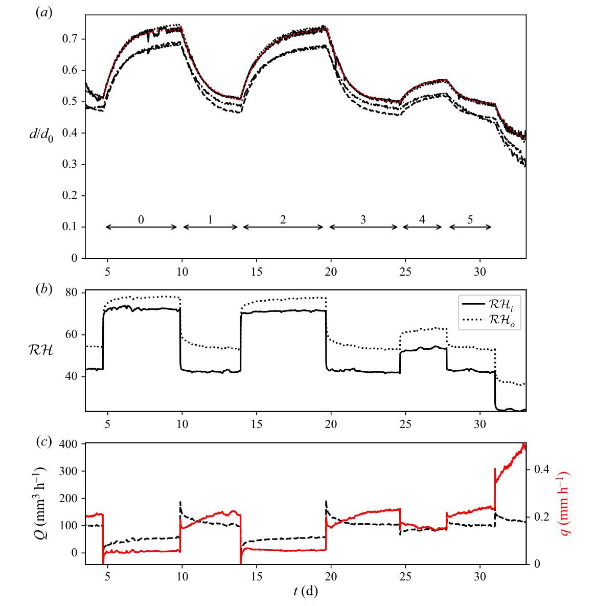

一颗不断失水的水凝胶珠为什么能保持稳定尺寸？
与水库相连的水凝胶可在持续通水时达到稳态。实验考察了蒸发通量和水库压力头，模型用凝胶内部的压力与浓度梯度解释收缩。
Transpiration through hydrogels
研究背景
水凝胶由交联聚合物网络组成，可吸收大量水。短时间看它像不可压弹性固体，长时间则能因外界应力、温度和湿度变化发生溶胀、收缩或形变。蒸腾是由蒸发表面驱动的水输运，在植物代谢、微流控泵、冷却、接触镜干燥和人工树等系统中都很重要。
已有研究通常把水凝胶或接触镜当作刚性多孔介质，关注稳态输运系数、Fick 扩散系数、Stefan-Maxwell 扩散系数或 Darcy 渗透率。作者认为一个关键问题被忽略了：化学势梯度在水凝胶里有机械意义，可视作 pore water pressure/pervadic pressure 梯度；若水凝胶不被夹持或限制，它会通过改变大小和形状来响应这种内部压力场。
本文的创新点是把高吸水、未受约束的水凝胶珠放在下方水库和上方空气之间，让它在蒸发驱动下自由收缩/溶胀，并同时测量尺寸、湿度、蒸发通量和压力头响应。作者要回答的问题是：蒸腾穿过水凝胶时，水流如何与聚合物体积分数、渗透压梯度和宏观形变耦合。
研究方法
实验装置与测量
水凝胶珠为 saturated ionic hydrogel bead，材料为 poly(acrylamide-co-(potassium acrylate))。每颗珠子坐在一个半球形 bead holder 中，底部有直径 2 mm 的孔，通过水柱连到 50 ml reservoir。将 reservoir 放低后，珠底部水压为 P = Pa - rho g H，其中 H 是 pressure head；珠子其余表面暴露在空气中蒸发。
外部空气通过盐溶液调湿，进入 evaporation chamber。作者记录进气相对湿度 RHi、出气相对湿度 RHo、气体流量 Q，并用相机测量水凝胶珠直径 d。蒸发量通过进出湿度差和流量计算，进一步得到总蒸发率 Q 和单位珠表面积蒸发通量 q。
Figure 1（实验装置和两种姿态）：
- Figure 1a 展示 bead holder、水库和压力头 H；Figure 1b-c 展示蒸发腔和调湿空气系统；Figure 1d 是相机看到的水凝胶珠。
- 实验中出现两种构型：on-side state 和 upright state。大珠子更容易倒向侧放，较大 pressure head 下较小珠子更容易保持 upright。
- 这张图重要，因为它说明水凝胶不是薄膜或固定样品，而是能变形、能移动姿态、并通过底部小孔与水库相连的自由软体系统；这也是实验可重复性差的来源之一。
Table 1（数据集概况）：
- 总结 dataset A-F 的珠数、饱和直径 d0、pressure head H、是否 upright 和实验备注。
- 这张表的作用不是给出核心机制，而是说明可用数据有限且实验条件并不完全一致：很多珠子未能达到稳态或中途干掉，因此后续模型对比主要是半定量。
数据处理
作者用指数松弛形式拟合每次外部条件改变后的尺寸响应：
d(t) = d_infty + [d(0) - d_infty] exp(-t/tau_e)
这里 d_infty 是外推稳态直径，tau_e 是实验松弛时间。这个拟合用于比较不同湿度、气流和压力头下的稳态尺寸及时间尺度。注意这个指数形式是经验提取工具，不是严格从模型推出的解析解。
具体结果
结果 1：相对湿度改变会改变稳态尺寸，并且升湿/降湿响应不对称

Figure 2（改变相对湿度）：
- Figure 2a 显示水凝胶珠直径 d/d0 随时间变化，黑线为各珠，红虚线为指数拟合。
- Figure 2b 给出 RHi 和 RHo；Figure 2c 给出总蒸发率 Q 和单位面积通量 q。
- 当进气湿度升高时，蒸发通量 q 在初始 chamber flushing spike 后较快降到新水平，水凝胶珠随之变大。
- 当进气湿度降低时，q 不会立即稳定到新水平，而是出现超过一天的缓慢过渡；作者认为这不是湿度腔瞬态，而是水凝胶收缩/溶胀过程本身的非对称性。
读图注意点：湿度切换刚发生时约半小时的尖峰可能来自 chamber flushing 或传感器/腔体校准响应，不能误读为水凝胶内部机制。
结果 2：提高空气流速或降低湿度都会提高蒸发通量，珠子随之收缩
Figure 3（改变气流、湿度和混合泵）：
- 前 18 天 RHi 约 0.43，之后改到约 0.73；第 16 天打开二级循环泵，显著增强珠面空气速度。
- 二级流一打开，蒸发通量明显提高，d/d0 显著下降，说明关键控制量是蒸发通量 q，而不仅是相对湿度本身。
- 作者指出，改变进气流量时珠子响应似乎比直接改变湿度更快，因此很多阶段只持续 2-3 天。
这组结果强化了一个判断：水凝胶尺寸是对实际蒸发通量的响应；湿度、流量和外部边界层只是通过影响 q 间接起作用。
结果 3：增大 pressure head 会使珠子收缩，甚至改变姿态
Figure 4（改变压力头 H）：
- 初始 H = 0.2 cm，珠子约 3 天后达到第一稳态，处于 on-side state。
- 第 6 天将 H 增加 10 cm，珠子开始收缩并从 on-side 转为 upright；第 8 天再增加 10 cm，珠子进一步收缩但幅度较小。
- RHo 只轻微改变，但 q 随珠子缩小而显著上升。这与球形蒸发到静止空气的直觉一致：较小珠子单位面积通量可更高。
- 降低 H 通常没有观察到可逆溶胀，很多实验在改变压力头后干掉。作者认为这与底部先溶胀/收缩导致珠子在 funnel-shaped holder 中卡住、密封破坏或形成气泡有关。
这部分实验最不稳定，但机制信息很强：pressure head 不只是外部水库参数，它改变底部边界条件和聚合物浓度分布，从而影响整体尺寸。
结果 4：稳态尺寸随 q 和 H 单调减小
Figure 5（不同固定 H 下的稳态数据）：
- 每个点是同一实验中多颗珠子的平均，误差条是珠间标准差。
- 在同一 H 数据集内，q_infty 越大，稳态 d/d0 越小。
- 不同 H 之间，H 越大，典型珠子尺寸越小；但较小 H 的两组数据几乎难以区分。
- 实验松弛时间 tau_e 约 0.27-1.2 d；同一数据集中较小的尺寸变化通常更快。
这张图是后续模型拟合的主要数据基础。它给出文章最稳健的经验结论：increasing H or q leads to smaller beads。
结果 5：一维模型把水凝胶输运解释为 pervadic pressure 梯度驱动的 Darcy 流
Figure 6（模型示意）：
- 模型把真实三维珠子简化成一维水凝胶柱，底部 z = 0 接半透膜和水库，顶部 z = a(t) 蒸发。
- 底部水压由 pressure head 给定，顶部蒸发通量 q(t) 给定，未知量是聚合物体积分数 phi(z,t)、相对水通量 u 和水凝胶高度 a(t)。
- pervadic pressure p 定义为：若用半透膜把凝胶和纯水腔连接，在化学势平衡时纯水腔中测到的水压。这样，水的化学势梯度可写成类似孔隙水压力梯度。
模型核心关系：
Darcy: eta u = -K grad p
Total pressure: P = pi(phi) + pe(phi) + p
Near swollen state: P - p ≈ pi0 (phi - phi0)/phi0
Water flux: u = K(phi)/eta * [pi0/phi0 * dphi/dz + rho g]
Polymer conservation: dphi/dt = d/dz [phi(u - q0)]
这里 pi(phi) 是混合/渗透压贡献，pe(phi) 是聚合物弹性贡献；作者不做完整 Flory-Rehner 非线性模型，而是用近似表达保留关键物理：聚合物体积分数越高，渗透压力越强，渗透率越低。
边界条件也很关键：
- 底部 z = 0：pervadic pressure 连续，因此 phi 由
H + a决定； - 顶部 z = a(t)：相对水通量等于蒸发通量 q；
- 整体聚合物体积守恒决定未知边界 a(t)。
结果 6：模型预测稳态尺寸随 q 和 H 下降
Figure 7（模型稳态尺寸）：
- 解析稳态下，phi 从底部到顶部增加；这个聚合物浓度梯度驱动水向蒸发表面输运。
- 增大 H 会提高整个域内的 phi，使凝胶因体积守恒而缩小。
- 增大 q 会提高除底部外的 phi，也使凝胶缩小。
- 在无蒸发 q -> 0 时，模型给出 a = 1/(1 + H) 的压力头响应；作者强调这不是单纯机械压缩，而是水库压力、聚合物弹性和渗透压平衡的结果。
结果 7：模型能再现实验中的尺寸松弛和缩胀非对称
Figure 8（改变 q 的模型瞬态）：
- 初始 saturated gel 在 q = 10、H = 0 下收缩到 a ≈0.5；将 q 降到 4.74 后，凝胶溶胀到 a ≈0.65；再升回 q = 10 后又收缩。
- 模型对增长过程的指数拟合很好，对收缩过程拟合稍差，说明收缩可能不是单一指数过程。
- 典型无量纲松弛时间为 0.02-0.04；收缩略快于溶胀。
Figure 9（改变 q 时 phi 分布）：
- 溶胀时，q 降低使蒸发表面附近的 phi 梯度变小；凝胶内部仍保持较陡梯度，底部继续向上部泵水，导致上部溶胀。
- 收缩时，q 增加使表面附近 phi 梯度增大，Darcy 通量超过内部未调整区域，水从表面排出，引发收缩。
- 时间尺度差异来自渗透率差异：溶胀需要水穿过底部高 phi、低渗透率区域；收缩时水可直接从顶部较低 phi、较高渗透率区域离开，因此更快。
Figure 10（改变 H 时 phi 分布）：
- 降低 H 会先改变底部边界，触发底部先溶胀。
- 增大 H 会使底部 phi 立即调整，局部可出现负 phi 梯度，对应水不仅从蒸发表面离开，也可能从底部离开。
- 这解释了实验中压力头变化的不可逆性：真实 bead holder 里底部先溶胀可能导致珠子卡住或密封变化。
结果 8：模型能半定量拟合稳态数据，但时间尺度偏快
Figure 11（稳态数据与模型拟合）：
- 作者用 Figure 5 的稳态数据同时拟合材料参数，得到
pi0 = 117 Pa和K0 = 3.8e-16 m2。 - 模型能捕捉不同 H 数据集的相对位置和 d/d0 随 q_infty 减小的趋势。
- 该 K0 对应约 200 nm 的孔尺度，与文献中聚丙烯酰胺水凝胶较大结构约 100 nm 同量级。
- 拟合参数给出 poroelastic time scale 约 4 d；结合模型无量纲时间 0.02-0.04，预测过渡时间为 0.08-0.16 d，低于实验 0.26-1.2 d，但仍在同一数量级。
作者把这视作关键物理正确的证据，而不是精确拟合：一维模型过于简化，但能用一组材料参数解释主要稳态趋势，并从稳态参数粗略预测独立测得的瞬态时间尺度。
结果 9：气相蒸发模型解释湿度响应的非对称
Figure 12（把水凝胶模型与静止空气蒸发模型耦合）：
- 若令表面平衡湿度 RHs = 1，即不依赖表面 phi，则改变背景 RH 后，q 先跳变再因 a 改变而缓慢调整。
- 若令 RHs = exp[-PA(phi - 1)]，即考虑凝胶水的 pervadic pressure/聚合物体积分数影响表面水活度，模型会出现升湿和降湿的不对称响应。
- PA = 0.01 时，升高 RH 后 q 几乎理想阶跃到新值；降低 RH 后 q 先阶跃再近线性慢调，与 Figure 2c 的实验趋势相似。
caveat：这个耦合模型用静止空气球体蒸发近似，而实验有连续 purge，实际边界层可能更接近 advective-diffusive 模型；作者也指出 Lévêque 型估计会给出较弱的尺寸依赖。
关键机制
机制 1：蒸发通量需要由内部聚合物浓度梯度维持
蒸发表面持续失水，但底部水库并不是以外加正压把水推上去；相反，底部压力可低于大气压。水能向上输运，是因为凝胶内部建立了 pervadic pressure 梯度。这个梯度等价于水化学势梯度，其来源是聚合物体积分数 phi 的空间差异。
机制链条：
蒸发表面失水 -> 表面附近 phi 增大 -> 渗透/弹性压力状态改变 -> pervadic pressure 梯度形成 -> Darcy 相对水流向蒸发表面 -> 宏观凝胶尺寸收缩到稳态
机制 2：q 或 H 增大都会要求更大 phi 梯度，因此珠子更小
增大蒸发通量 q 意味着凝胶必须提供更大的内部水通量；在模型中，这需要更陡的 phi 梯度和更高的聚合物浓度，从而使整体体积缩小。增大 pressure head H 则让底部水库压力更低，凝胶必须克服更大的反向机械压力差，也需要更高的聚合物体积分数和更小尺寸。
机制 3：溶胀和收缩不是时间反演
溶胀时，水必须穿过已经较致密、渗透率较低的区域；收缩时，水可以从蒸发表面附近较高渗透率区域直接离开。真实三维珠子还会有干外壳、湿中心、hoop stress、bead holder 卡滞和密封变化，因此升湿/降湿、增压/减压的响应会表现出明显滞后和不可逆性。
适用范围与局限
- 实验难度高且可重复性有限。超过一半珠子没有达到稳态而是几天内干掉；改变 pressure head 的实验尤其容易破坏底部密封或引入气泡。
- 模型是一维概念模型，不能解析真实球形珠子的三维应力、径向收缩、干外壳/湿内核、hoop stress 和 bead holder 几何卡滞。
- 模型只取各向同性压力，不能描述非线性三维 poroelasticity 中的各向异性 Cauchy stress；作者明确认为三维效应可能解释部分滞后和拟合差异。
- 气相蒸发模型在讨论部分使用静止空气近似；实验中 chamber 被持续 purge，外部质量传递边界层可能不同。
- 拟合得到的瞬态时间 0.08-0.16 d 小于实验 0.26-1.2 d，说明模型抓住数量级但没有完整描述动力学。
- 这篇不是关于自由液滴界面形变或 Marangoni 的论文；它的“蒸发”主要是凝胶-空气界面上的水分输运，不能直接套到普通液滴表面张力问题上。